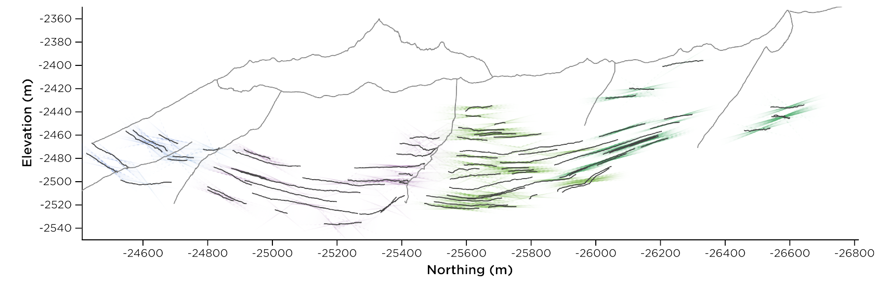
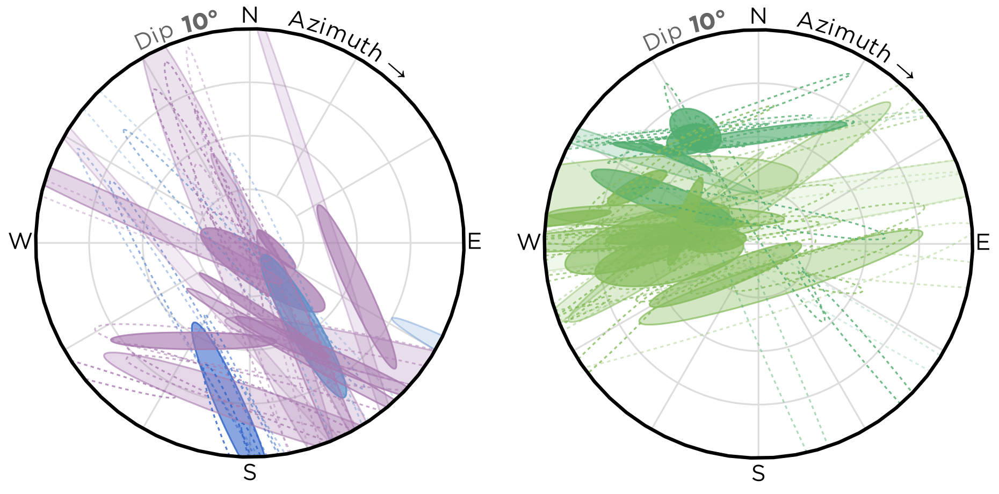

Attitude¶
Introduction¶
Attitude is a Python module for fitting the orientation of planes in three-dimensional space with meaningful error distributions. This software is the reference implementation of the statistical method described in this working paper, currently in review at Earth and Space Sciences.
 {kind=link}
{kind=link}
The error-analysis and visualization process developed here is crucial to creating accurate and consistent studies of geological orientations from remote-sensing data. The methodology was developed primarily to support the analysis of geological orientations from Mars imagery and photogrammetric elevation models, but it can be applied to any remote-sensing dataset that can capture the three-dimensional linear trace of a planar feature. The method’s flexibility and independence from input view geometry make it particularly suited to unmanned aerial vehicle (UAV) and ad-hoc structure-from-motion (SfM) datasets.
By default, the method uses principal-component analysis (PCA) to perform an orientation-independent regression. The Python module also contains helpers for plotting orientation data on one of several spherical axes. Several Javascript components, developed in tandem with the Python module, are included to plot error distributions for spherical orientation data.
Usage¶
The module accepts input in the form of a n-by-3 matrix with columns corresponding to X, Y, and Z coordinates. These data are commonly extracted from linear or polygonal features on a digital elevation model.
A planar fit can be constructed as such:
from attitude import Orientation
measurement = Orientation(array)
Installation¶
Attitude is packaged as a standard Python module. The latest version is available on PyPI and can be installed using PIP:
pip install Attitude
If you want to use the development version (which is generally more up-to-date), you can instead run:
pip install git+git://github.com/davenquinn/Attitude.git
Contributing¶
Submit an issue on GitHub, or even better, submit a pull request. We are especially open to implementing new statistical cores.